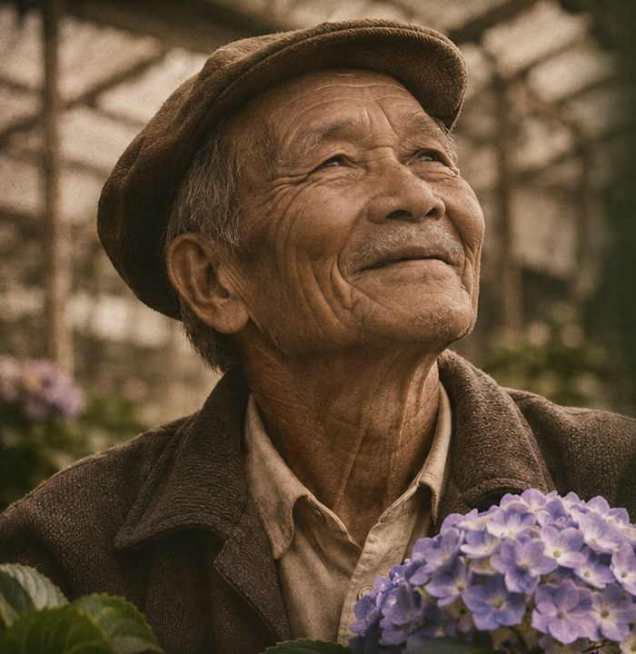
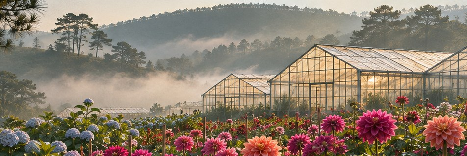

<meta charset="UTF-8">
<meta name="claude:viewport-fit-sides" content="cover">
<link rel="preconnect" href="https://fonts.googleapis.com">
<link rel="preconnect" href="https://fonts.gstatic.com" crossorigin>
<link rel="stylesheet" href="https://fonts.googleapis.com/css2?family=Cormorant+Garamond:wght@500;600;700&family=Be+Vietnam+Pro:wght@400;500;600;700&display=swap">
<title>Bảo tàng Hoa Đà Lạt</title>
<style>
/* Layout: editorial museum page. Forest green bands, warm paper sections,
   burgundy for actions and active states, gold hairlines. */
:root {
  --bg: #F3ECDD;
  --surface: #FBF7EE;
  --fg: #2A2620;
  --muted: #6E6557;
  --forest: #1D2E22;
  --forest-2: #2B4232;
  --on-forest: #F1E8D4;
  --on-forest-muted: #B9C2AE;
  --maroon: #6A1D23;
  --gold: #B8924A;
  --line: rgba(42, 38, 32, 0.16);
  color-scheme: light;
}
* { box-sizing: border-box; }
html { scroll-behavior: smooth; }
body {
  margin: 0;
  background: var(--bg);
  color: var(--fg);
  font: 16px/1.65 "Be Vietnam Pro", system-ui, sans-serif;
  padding-left: max(0px, env(safe-area-inset-left, 0px));
  padding-right: max(0px, env(safe-area-inset-right, 0px));
}
h1, h2, h3 { font-family: "Cormorant Garamond", Georgia, serif; font-weight: 600; line-height: 1.1; margin: 0; text-wrap: balance; }
p { margin: 0; }
a { color: inherit; }
img { max-width: 100%; display: block; }
:focus-visible { outline: 2px solid var(--gold); outline-offset: 3px; }

.wrap {
  max-width: 1180px;
  margin: 0 auto;
  padding-left: max(16px, env(safe-area-inset-left, 0px));
  padding-right: max(16px, env(safe-area-inset-right, 0px));
}
.eyebrow {
  font-size: 12px;
  letter-spacing: 0.22em;
  text-transform: uppercase;
  color: var(--maroon);
  display: flex;
  align-items: center;
  gap: 14px;
}
.eyebrow::after { content: ""; flex: 1; height: 1px; background: currentColor; opacity: 0.35; }
.section { padding-block: 72px; scroll-margin-top: 80px; }
.section-head { display: grid; gap: 14px; margin-bottom: 36px; }
.section-head h2 { font-size: clamp(34px, 5vw, 54px); color: var(--forest); }
.section-head p { color: var(--muted); max-width: 60ch; }
.note { font-size: 13px; color: var(--muted); font-style: italic; }

/* Header */
.site-header {
  position: sticky;
  top: env(safe-area-inset-top, 0px);
  z-index: 20;
  background: var(--forest);
  color: var(--on-forest);
  border-bottom: 1px solid rgba(184, 146, 74, 0.35);
}
.site-header .wrap {
  display: flex;
  align-items: center;
  justify-content: space-between;
  gap: 16px;
  min-height: 68px;
  position: relative;
}
.brand { font-family: "Cormorant Garamond", serif; font-size: 20px; font-weight: 600; letter-spacing: 0.04em; text-decoration: none; line-height: 1.1; }
.nav { display: flex; gap: 22px; }
.nav a { text-decoration: none; font-size: 14px; color: var(--on-forest-muted); padding: 6px 0; border-bottom: 2px solid transparent; white-space: nowrap; }
.nav a:hover, .nav a[aria-current="true"] { color: var(--on-forest); border-bottom-color: var(--gold); }
.menu-btn {
  display: none;
  background: none;
  border: 1px solid rgba(184, 146, 74, 0.6);
  color: var(--on-forest);
  padding: 8px 12px;
  font: inherit;
  cursor: pointer;
}
@media (max-width: 1000px) {
  .menu-btn { display: block; }
  .nav { display: none; position: absolute; left: 0; right: 0; top: 100%; flex-direction: column; gap: 0; background: var(--forest); padding: 8px max(16px, env(safe-area-inset-left, 0px)); border-top: 1px solid rgba(184,146,74,.35); }
  .nav.open { display: flex; }
  .nav a { padding: 12px 0; border-bottom: 1px solid rgba(241,232,212,.08); }
}

/* Hero */
.hero { background: var(--forest); color: var(--on-forest); position: relative; overflow: hidden; }
.hero::before {
  content: "";
  position: absolute; inset: 0;
  background:
    radial-gradient(ellipse at 80% 30%, rgba(184,146,74,.22), transparent 55%),
    repeating-linear-gradient(90deg, rgba(241,232,212,.035) 0 2px, transparent 2px 60px);
  pointer-events: none;
}
.hero .wrap { position: relative; display: grid; gap: 40px; padding-block: 88px 96px; grid-template-columns: 1.1fr 0.9fr; align-items: end; }
.hero h1 { font-size: clamp(48px, 8vw, 96px); color: var(--on-forest); letter-spacing: -0.01em; margin-top: 18px; }
.hero .lede { font-size: 18px; color: var(--on-forest-muted); max-width: 48ch; margin-top: 22px; }
.hero-actions { display: flex; flex-wrap: wrap; gap: 14px; margin-top: 34px; }
.btn {
  display: inline-flex; align-items: center; gap: 12px;
  padding: 14px 22px; font: 600 13px "Be Vietnam Pro", sans-serif;
  letter-spacing: 0.14em; text-transform: uppercase; text-decoration: none;
  border: 1px solid var(--gold); background: transparent; color: inherit;
}
.btn-primary { background: var(--maroon); border-color: var(--maroon); color: #F7EEDC; }
.btn-primary:hover { background: #7E2630; }
.btn-ghost:hover { background: rgba(184,146,74,.12); }
.hero-plate { margin: 0; background: var(--forest-2); border: 1px solid rgba(184,146,74,.45); padding: 14px; }
.hero-plate img { width: 100%; aspect-ratio: 4 / 5; object-fit: cover; }
.hero-plate figcaption { font-size: 12px; color: var(--on-forest-muted); margin-top: 10px; }
@media (max-width: 900px) {
  .hero .wrap { grid-template-columns: 1fr; padding-block: 56px 64px; }
  .hero-plate { display: none; }
}

/* Villages */
.villages { display: grid; grid-template-columns: repeat(5, 1fr); gap: 0; border: 1px solid var(--line); background: var(--surface); }
.village { padding: 26px 22px; border-left: 1px solid var(--line); display: grid; gap: 10px; align-content: start; min-width: 0; }
.village:first-child { border-left: 0; }
.village .year { font: 600 15px "Be Vietnam Pro", sans-serif; color: var(--maroon); letter-spacing: 0.08em; }
.village h3 { font-size: 26px; color: var(--forest); }
.village p { font-size: 15px; color: var(--muted); }
@media (max-width: 1000px) {
  .villages { grid-template-columns: 1fr 1fr; }
  .village:nth-child(odd) { border-left: 0; }
  .village { border-top: 1px solid var(--line); }
}
@media (max-width: 560px) { .villages { grid-template-columns: 1fr; } .village { border-left: 0; } }

/* Timeline */
.timeline { list-style: none; margin: 0; padding: 0; display: grid; grid-template-columns: repeat(5, 1fr); position: relative; }
.timeline li { padding: 0 18px 0 0; position: relative; min-width: 0; }
.timeline li::before { content: ""; position: absolute; left: 0; right: 0; top: 9px; height: 1px; background: var(--line); }
.timeline li::after { content: ""; position: absolute; left: 0; top: 2px; width: 15px; height: 15px; border-radius: 50%; background: var(--bg); border: 1px solid var(--maroon); }
.timeline time { display: block; padding-top: 40px; font: 600 34px "Cormorant Garamond", serif; color: var(--maroon); }
.timeline h3 { font: 600 20px "Cormorant Garamond", serif; margin-top: 8px; color: var(--forest); }
.timeline p { font-size: 14px; color: var(--muted); margin-top: 6px; }
@media (max-width: 900px) { .timeline { grid-template-columns: 1fr 1fr; row-gap: 36px; } }
@media (max-width: 480px) { .timeline { grid-template-columns: 1fr; } }

/* Story split */
.split { display: grid; grid-template-columns: 1fr 1fr; gap: 40px; align-items: center; }
.split figure { margin: 0; background: var(--surface); padding: 14px; border: 1px solid var(--line); }
.split figure img { width: 100%; aspect-ratio: 4 / 3; object-fit: cover; }
.split figcaption { font-size: 12px; color: var(--muted); margin-top: 10px; }
.split p.lead { font-size: 18px; color: var(--fg); }
@media (max-width: 860px) { .split { grid-template-columns: 1fr; } }

/* Gardeners */
.gardeners { list-style: none; margin: 0; padding: 0; display: grid; gap: 14px; }
.gardeners li { background: var(--surface); border: 1px solid var(--line); padding: 18px 22px; display: grid; grid-template-columns: 170px 1fr; gap: 18px; align-items: baseline; }
.gardeners strong { font: 600 22px "Cormorant Garamond", serif; color: var(--forest); }
.gardeners span { color: var(--muted); }
@media (max-width: 620px) { .gardeners li { grid-template-columns: 1fr; gap: 6px; } }

/* Stages */
.stages { display: grid; grid-template-columns: repeat(4, 1fr); gap: 22px; }
.stage { background: var(--surface); border: 1px solid var(--line); padding: 24px; display: grid; gap: 10px; align-content: start; }
.stage .n { font: 600 36px "Cormorant Garamond", serif; color: var(--gold); }
.stage h3 { font-size: 24px; color: var(--forest); }
.stage p { font-size: 15px; color: var(--muted); }
@media (max-width: 900px) { .stages { grid-template-columns: 1fr 1fr; } }
@media (max-width: 560px) { .stages { grid-template-columns: 1fr; } }

/* Collection */
.collection { background: var(--surface); border-block: 1px solid var(--line); }
.filters { display: flex; flex-wrap: wrap; gap: 10px; margin-bottom: 30px; }
.chip {
  font: 500 14px "Be Vietnam Pro", sans-serif; padding: 9px 16px; cursor: pointer;
  background: transparent; border: 1px solid var(--line); color: var(--fg);
}
.chip[aria-pressed="true"] { background: var(--forest); border-color: var(--forest); color: var(--on-forest); }
.object-grid { display: grid; grid-template-columns: repeat(3, 1fr); gap: 22px; }
.object { border: 1px solid var(--line); background: var(--bg); padding: 20px; display: grid; gap: 10px; align-content: start; }
.object[hidden] { display: none; }
.object .slot {
  aspect-ratio: 4 / 3; background: repeating-linear-gradient(45deg, rgba(42,38,32,.04) 0 10px, transparent 10px 20px);
  border: 1px dashed var(--line); display: grid; place-items: center; font-size: 13px; color: var(--muted);
}
.object .village-tag { font-size: 12px; letter-spacing: 0.16em; text-transform: uppercase; color: var(--maroon); }
.object h3 { font-size: 24px; color: var(--forest); }
.object p { font-size: 15px; color: var(--muted); }
@media (max-width: 900px) { .object-grid { grid-template-columns: 1fr 1fr; } }
@media (max-width: 560px) { .object-grid { grid-template-columns: 1fr; } }

/* Visit */
.visit { background: var(--forest); color: var(--on-forest); }
.visit .section-head h2 { color: var(--on-forest); }
.visit .section-head p { color: var(--on-forest-muted); }
.visit-card { border: 1px solid rgba(184,146,74,.4); padding: 26px; max-width: 640px; display: grid; gap: 10px; }
.visit-card h3 { font-size: 26px; color: var(--on-forest); }
.visit-card p { font-size: 15px; color: var(--on-forest-muted); }

footer { background: #15231A; color: var(--on-forest-muted); font-size: 14px; }
footer .wrap { display: flex; flex-wrap: wrap; justify-content: space-between; gap: 16px; padding-block: 34px; }
footer strong { color: var(--on-forest); font-family: "Cormorant Garamond", serif; font-size: 20px; font-weight: 600; }
</style>

<header class="site-header">
  <div class="wrap">
    <a class="brand" href="#top">Bảo tàng Hoa Đà Lạt</a>
    <nav class="nav" id="nav" aria-label="Điều hướng chính">
      <a href="#top" aria-current="true">Trang chủ</a>
      <a href="#hat-giong">Hạt giống ký ức</a>
      <a href="#lang-hoa">Năm làng hoa</a>
      <a href="#gieo-mam">Những người gieo mầm</a>
      <a href="#cong-nghe">Từ đôi bàn tay đến công nghệ</a>
      <a href="#kho-ky-uc">Kho ký ức</a>
    </nav>
    <button class="menu-btn" id="menuBtn" aria-expanded="false" aria-controls="nav">Menu</button>
  </div>
</header>

<main id="top">

<section class="hero">
  <div class="wrap">
    <div>
      <p class="eyebrow" style="color: var(--gold)">Bảo tàng Hoa Đà Lạt</p>
      <h1>Nơi ký ức nở thành hoa</h1>
      <p class="lede">Lịch sử nghề trồng hoa Đà Lạt qua năm làng hoa: Hà Đông, Thái Phiên, Vạn Thành, Xuân Thọ và Đa Thiện.</p>
      <div class="hero-actions">
        <a class="btn btn-primary" href="#hat-giong">Bắt đầu từ hạt giống →</a>
        <a class="btn btn-ghost" href="#lang-hoa">Năm làng hoa</a>
      </div>
    </div>
    <figure class="hero-plate">
      
      <figcaption>Ảnh minh họa, chưa phải tư liệu thật</figcaption>
    </figure>
  </div>
</section>

<section class="section" id="hat-giong">
  <div class="wrap">
    <div class="section-head">
      <p class="eyebrow">Hạt giống ký ức</p>
      <h2>Hành trình lan tỏa và tiếp nối</h2>
      <p>Lịch sử của năm làng hoa là một dòng chảy liên tục: thế hệ trước gieo, thế hệ sau tiếp nối.</p>
    </div>
    <ol class="timeline">
      <li><time>1938</time><h3>Hà Đông</h3><p>Các gia đình từ ven Hồ Tây lập ấp Hà Đông, ban đầu khai hoang và trồng rau tiếp tế.</p></li>
      <li><time>1954</time><h3>Xuân Thọ</h3><p>50 hộ từ miền Trung đến lập nghiệp, bắt đầu chuyển sang trồng hoa.</p></li>
      <li><time>1956</time><h3>Thái Phiên</h3><p>Nông dân từ các tỉnh miền Trung dựng lán, lập ấp và đặt tên theo nhà yêu nước Thái Phiên.</p></li>
      <li><time>1956</time><h3>Đa Thiện</h3><p>55 người tiên phong từ ấp Hà Đông bắt đầu khai hoang vùng thung lũng.</p></li>
      <li><time>~1960</time><h3>Vạn Thành</h3><p>Các gia đình di dân từ châu thổ sông Hồng lập ấp trên sườn đồi phía Tây Đà Lạt.</p></li>
    </ol>
    <p class="note" style="margin-top: 28px">Mốc năm 1965 của Xuân Thọ và các số liệu chi tiết đang được kiểm tra thêm.</p>
  </div>
</section>

<section class="section" id="lang-hoa" style="background: var(--surface); border-block: 1px solid var(--line)">
  <div class="wrap">
    <div class="section-head">
      <p class="eyebrow">Năm làng hoa</p>
      <h2>Mỗi làng một bản sắc</h2>
    </div>
    <div class="villages">
      <article class="village">
        <span class="year">1938</span>
        <h3>Hà Đông</h3>
        <p>Cái nôi của nghề hoa và dấu chân mở cõi.</p>
      </article>
      <article class="village">
        <span class="year">1956</span>
        <h3>Thái Phiên</h3>
        <p>Thủ phủ hoa cúc và những đêm thắp đèn.</p>
      </article>
      <article class="village">
        <span class="year">~1960</span>
        <h3>Vạn Thành</h3>
        <p>Vương quốc hoa hồng và nghệ thuật ghép cành.</p>
      </article>
      <article class="village">
        <span class="year">1954</span>
        <h3>Xuân Thọ</h3>
        <p>Vựa lay-ơn của cao nguyên.</p>
      </article>
      <article class="village">
        <span class="year">1956</span>
        <h3>Đa Thiện</h3>
        <p>Thủ phủ hoa chất lượng cao.</p>
      </article>
    </div>
  </div>
</section>

<section class="section" id="gieo-mam">
  <div class="wrap split">
    <div>
      <div class="section-head" style="margin-bottom: 26px">
        <p class="eyebrow">Những người gieo mầm</p>
        <h2>Con người làm nên hoa</h2>
        <p class="lead">Tôn vinh những người trồng hoa qua nhiều thế hệ, từ bàn tay đầu tiên khai đất đến những người nối nghề hôm nay.</p>
      </div>
      <ul class="gardeners">
        <li><strong>Hà Đông</strong><span>Hào hoa và tỉ mẩn chốn Kinh kỳ</span></li>
        <li><strong>Thái Phiên</strong><span>Khát vọng đổi đời và những đêm trắng thắp đèn</span></li>
        <li><strong>Vạn Thành</strong><span>Đôi tay tài hoa và lòng can đảm trên sườn dốc</span></li>
        <li><strong>Xuân Thọ</strong><span>Tâm hồn lãng mạn và sự nhạy bén thời cuộc</span></li>
        <li><strong>Đa Thiện</strong><span>Cởi mở và tinh thần giao hòa quần tụ</span></li>
      </ul>
    </div>
    <figure>
      
      <figcaption>Ảnh minh họa, chưa phải tư liệu thật</figcaption>
    </figure>
  </div>
</section>

<section class="section" id="cong-nghe" style="background: var(--surface); border-block: 1px solid var(--line)">
  <div class="wrap">
    <div class="section-head">
      <p class="eyebrow">Từ đôi bàn tay đến công nghệ</p>
      <h2>Bốn giai đoạn của nghề trồng hoa</h2>
      <p>Từ canh tác phụ thuộc thời tiết đến người nông dân trở thành kỹ sư nông nghiệp.</p>
    </div>
    <div class="stages">
      <article class="stage"><span class="n">I</span><h3>Canh tác truyền thống</h3><p>Phụ thuộc hoàn toàn vào thời tiết.</p></article>
      <article class="stage"><span class="n">II</span><h3>Nhà lồng và đèn</h3><p>Nhà lồng tre, nilon và kỹ thuật thắp đèn.</p></article>
      <article class="stage"><span class="n">III</span><h3>Nhà kính</h3><p>Nhà kính, tưới nhỏ giọt, cảm biến và giống mới.</p></article>
      <article class="stage"><span class="n">IV</span><h3>Kỹ sư nông nghiệp</h3><p>Người nông dân trở thành kỹ sư nông nghiệp.</p></article>
    </div>
  </div>
</section>

<section class="section collection" id="kho-ky-uc">
  <div class="wrap">
    <div class="section-head">
      <p class="eyebrow">Kho ký ức</p>
      <h2>Hiện vật trưng bày</h2>
      <p>Lọc theo làng để xem các hiện vật đã được đề xuất. Ảnh hiện vật đang chờ chụp.</p>
    </div>
    <div class="filters" role="group" aria-label="Lọc hiện vật theo làng">
      <button class="chip" aria-pressed="true" data-filter="all">Tất cả</button>
      <button class="chip" aria-pressed="false" data-filter="ha-dong">Hà Đông</button>
      <button class="chip" aria-pressed="false" data-filter="thai-phien">Thái Phiên</button>
      <button class="chip" aria-pressed="false" data-filter="van-thanh">Vạn Thành</button>
      <button class="chip" aria-pressed="false" data-filter="xuan-tho">Xuân Thọ</button>
      <button class="chip" aria-pressed="false" data-filter="da-thien">Đa Thiện</button>
    </div>
    <div class="object-grid" id="objects">
      <article class="object" data-cat="ha-dong">
        <div class="slot">Ảnh hiện vật chờ chụp</div>
        <span class="village-tag">Hà Đông</span>
        <h3>Bản phục chế khế ước cấp đất năm 1938</h3>
        <p>Trưng bày trong lồng kính bảo quản.</p>
      </article>
      <article class="object" data-cat="ha-dong">
        <div class="slot">Ảnh hiện vật chờ chụp</div>
        <span class="village-tag">Hà Đông</span>
        <h3>Bình tưới nước thiếc gò tay</h3>
        <p>Biểu tượng của người làm vườn xưa.</p>
      </article>
      <article class="object" data-cat="thai-phien">
        <div class="slot">Ảnh hiện vật chờ chụp</div>
        <span class="village-tag">Thái Phiên</span>
        <h3>Sổ ghi chép ngày công và sổ nợ phân bón</h3>
        <p>Giấy tờ ố vàng theo thời gian.</p>
      </article>
      <article class="object" data-cat="thai-phien">
        <div class="slot">Ảnh hiện vật chờ chụp</div>
        <span class="village-tag">Thái Phiên</span>
        <h3>Bóng đèn sợi đốt kiểu cũ</h3>
        <p>Dùng để thắp sáng cho hoa cúc.</p>
      </article>
      <article class="object" data-cat="van-thanh">
        <div class="slot">Ảnh hiện vật chờ chụp</div>
        <span class="village-tag">Vạn Thành</span>
        <h3>Đôi thùng gánh nước bằng tôn thiếc</h3>
        <p>Hàn vá nhiều chỗ, đi kèm đòn gánh tre.</p>
      </article>
      <article class="object" data-cat="van-thanh">
        <div class="slot">Ảnh hiện vật chờ chụp</div>
        <span class="village-tag">Vạn Thành</span>
        <h3>Bộ dụng cụ ghép cành</h3>
        <p>Nghệ thuật ghép cành trên sườn đồi.</p>
      </article>
      <article class="object" data-cat="xuan-tho">
        <div class="slot">Ảnh hiện vật chờ chụp</div>
        <span class="village-tag">Xuân Thọ</span>
        <h3>Đèn măng-xông hoặc đèn dầu cũ</h3>
        <p>Thuộc đời sống những năm đầu lập làng.</p>
      </article>
      <article class="object" data-cat="da-thien">
        <div class="slot">Ảnh hiện vật chờ chụp</div>
        <span class="village-tag">Đa Thiện</span>
        <h3>Chiếc gùi tre hoặc mây</h3>
        <p>Đeo lưng khi đi làm vườn.</p>
      </article>
    </div>
  </div>
</section>

<section class="section visit" id="tham-quan">
  <div class="wrap">
    <div class="section-head">
      <p class="eyebrow" style="color: var(--gold)">Thông tin tham quan</p>
      <h2>Ghé thăm bảo tàng</h2>
    </div>
    <div class="visit-card">
      <h3>Đang cập nhật</h3>
      <p>Giờ mở cửa, địa chỉ và thông tin liên hệ sẽ được bổ sung khi có xác nhận.</p>
    </div>
  </div>
</section>

</main>

<footer>
  <div class="wrap">
    <div><strong>Bảo tàng Hoa Đà Lạt</strong><br>Nơi ký ức nở thành hoa.</div>
  </div>
</footer>

<script>
  const menuBtn = document.getElementById('menuBtn');
  const nav = document.getElementById('nav');
  menuBtn.addEventListener('click', () => {
    const open = nav.classList.toggle('open');
    menuBtn.setAttribute('aria-expanded', String(open));
  });
  nav.querySelectorAll('a').forEach(a => a.addEventListener('click', () => {
    nav.classList.remove('open');
    menuBtn.setAttribute('aria-expanded', 'false');
  }));

  document.querySelectorAll('.chip').forEach(chip => {
    chip.addEventListener('click', () => {
      const f = chip.dataset.filter;
      document.querySelectorAll('.chip').forEach(c => c.setAttribute('aria-pressed', String(c === chip)));
      document.querySelectorAll('#objects .object').forEach(o => {
        o.hidden = !(f === 'all' || o.dataset.cat === f);
      });
    });
  });

  const links = [...nav.querySelectorAll('a')];
  const sections = links.map(a => document.querySelector(a.getAttribute('href'))).filter(Boolean);
  const io = new IntersectionObserver(entries => {
    entries.forEach(en => {
      if (en.isIntersecting) {
        links.forEach(l => l.setAttribute('aria-current', String(l.getAttribute('href') === '#' + en.target.id)));
      }
    });
  }, { rootMargin: '-45% 0px -50% 0px' });
  sections.forEach(s => io.observe(s));
</script>
